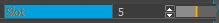
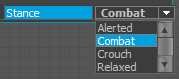
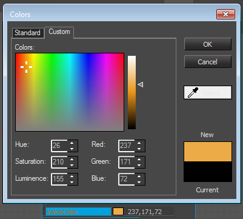

Дополнительную информацию о том, как использовать Flow Graph Редактор.
Также возможно добавить функциональность Flowgraph к любому объекту Lua, Добавление входов и выходов Lua Flownode.
Обзор
В этой статье описаны шаги по реализации нового узла потокового графа.
Базовый код
Рекомендуется реализовать узлы потока, принадлежащие к одной группе, в одном файле cpp. Обычно заголовок не нужен, за исключением некоторых специальных узлов.
Поместите файл cpp в файл проекта в CryAction/Flow System Files/Nodes и внутри структуры каталогов файловой системы в Code/CryEngine/CryAction/FlowSystem/Nodes.
В файле cpp добавьте класс, используя следующий код template, и замените «MyName» на желаемое имя вашего узла потока. Замените «FlowNodeGroup» на желаемое имя группы и создайте соответствующую подпапку в селекторе узла редактора, где будет размещен этот тип узла.
#include "StdAfx.h"
#include "FlowBaseNode.h"
class CFlowNode_MyName : public CFlowBaseNode<eNCT_Instanced>
{
public:
CFlowNode_MyName(SActivationInfo* pActInfo)
{
};
virtual IFlowNodePtr Clone(SActivationInfo *pActInfo)
{
return new CFlowNode_MyName(pActInfo);
};
virtual void GetMemoryUsage(ICrySizer* s) const
{
s->Add(*this);
}
virtual void GetConfiguration(SFlowNodeConfig& config)
{
static const SInputPortConfig in_config[] = {
{0}
};
static const SOutputPortConfig out_config[] = {
{0}
};
config.sDescription = _HELP( "A description of this flow node" );
config.pInputPorts = in_config;
config.pOutputPorts = out_config;
config.SetCategory(EFLN_APPROVED);
}
virtual void ProcessEvent(EFlowEvent event, SActivationInfo* pActInfo)
{
switch (event)
{
};
}
};
REGISTER_FLOW_NODE("FlowNodeGroup:MyName", CFlowNode_MyName);
eNCT_Instanced против eNCT_Singleton
Когда вы объявляете FlowNode в коде, вы можете выбирать между Instanced и Singleton в параметре template родительского элемента.
Если у вас есть одноэлементный узел, он создаст только 1 его экземпляр. вы по-прежнему можете иметь несколько узлов в вашем Flowgraph, но объем памяти будет намного меньше.
Как правило, используйте синглтон всякий раз, когда вы не храните какие-либо данные о состоянии (переменные-члены и т. д.) и предпочитаете синглтон экземпляру.
Добавление выходных портов
Узлы потока имеют как входные, так и выходные порты. Выходной порт можно добавить, изменив GetConfiguration функцию, как можно увидеть в следующем примере:
class CFlowNode_MyName : public CFlowBaseNode<eNCT_Instanced>
{
public:
// ...
virtual void GetConfiguration( SFlowNodeConfig& config )
{
static const SInputPortConfig in_config[] = {
{0}
};
static const SOutputPortConfig out_config[] = {
OutputPortConfig<int>("alertness", _HELP("useful help text")),
{0}
};
config.sDescription = _HELP( "A description of this flow node" );
config.pInputPorts = in_config;
config.pOutputPorts = out_config;
config.nFlags = 0;
}
// ...
};
OutputPortConfig — это шаблонная вспомогательная функция, полезная для заполнения небольшой структуры соответствующими данными.
Можно указать различные типы, но в примере тип порта — «int». Доступные типы: SFlowSystemVoid, int, float, EntityId, Век3, строкаи bool. SFlowSystemVoid — это специальный тип, который представляет «нет значения». OutputPortConfig принимает три параметра: имя выходного порта, некоторый описательный текст справки, который отображается в редакторе GUI, и необязательное удобочитаемое имя порта, которое видно дизайнерам. Убедитесь, что вы выбрали правильное имя порта, поскольку его последующее изменение приведет к поломке всех графов потоков, использующих этот узел. Если вам нужно изменить отображаемое имя, используйте третий параметр.
Чтобы передать значение из порта, вы можете использовать функцию CFlowBaseNode::ActivateOutput( pActInfo, nPort, значение ). Эта функция занимает pActInfo (обычно передается ProcessEvent()), идентификатор порта (отсчет начинается с нуля сверху out_config) и значение того же типа, что и порт. Итак, чтобы активировать нашу выходную «бдительность» с помощью 3, мы могли бы написать:
ActivateOutput( pActInfo, 0, 3 );
Добавление входных портов
Входной порт можно добавить аналогично выходному порту, изменив GetConfiguration функция:
class CFlowNode_MyName : public CFlowBaseNode<eNCT_Instanced>
{
public:
// ...
virtual void GetConfiguration( SFlowNodeConfig& config )
{
static const SInputPortConfig in_config[] = {
InputPortConfig<int>("someInput", _HELP("useful help text")),
{0}
};
static const SOutputPortConfig out_config[] = {
{0}
};
config.sDescription = _HELP( "A description of this flow node" );
config.pInputPorts = in_config;
config.pOutputPorts = out_config;
config.nFlags = 0;
}
// ...
};
InputPortConfig это шаблонная вспомогательная функция, похожая на OutputPortConfig. Для входных портов можно указать те же типы, что и для выходных портов.
InputPortConfig принимает следующие параметры:
- имя [обязательно] — используется для внутреннего использования и для сохранения графика. Опять же рекомендуется тщательно выбирать имя порта, поскольку его последующее изменение приведет к нарушению графов потоков, использующих этот узел. Важно: Не используйте символ подчеркивания _ в именах портов. поскольку в предыдущих версиях это использовалось для указания специализированного редактора для порта,
- ценность - значение порта по умолчанию при создании нового узла,
- описание - для всплывающей подсказки при наведении курсора мыши,
- humanName - удобочитаемое имя для отображения на узле. Используйте это для визуального просмотра override имени порта без нарушения совместимости сценариев.
- sUIConfig — форматированная строка, определяющая, как UI должен вести себя при установке значения порта. Здесь вы можете выбрать специализированный виджет или настроить разрешенный диапазон ввода. Дополнительные сведения см. в разделе «Конфигурация UI».
UI Конфигурация
Интерфейс для установки значения входного порта можно определить, передав ряд параметров в виде строки с парами ключ-значение в InputPortConfig.
Возможности:
- Установка диапазона значений:
_UICONFIG("v_min=0, v_max=10")
Это ограничит стрелки и рампу виджета, а также зафиксирует значения, вставленные вручную, как показано на рисунке.

- Раскрывающийся список перечисления:
_UICONFIG("enum_int:Relaxed=0,Alert=1,Combat=2,Crouch=3")Существует несколько типов перечислений, которые можно использовать для отображения раскрывающегося списка читаемых строк, которые соответствуют значению, которое фактически используется узлом (и сохраняется при сохранении графа). Перечисления могут иметь тип int или float, как в примере выше и показано на рисунке.

enum также может иметь строковый тип с сопоставлением с другим значением или без него:
_UICONFIG("enum_string:a,b,c")
_UICONFIG("enum_string:DisplayA=a,DisplayB=b,DisplayC=c")Перечисления также могут ссылаться на глобальные и динамические перечисления UI, определенные в InitUIEnums. Например, «vehicleLightTypes» считывается из Scripts/Entities/Vehicles/Lights/DefaultVehicleLights.xml . При желании enum может зависеть от другого порта, чтобы повлиять на доступный выбор:
_UICONFIG("enum_global:ENUM_NAME")
_UICONFIG("enum_global:vehicleLightTypes")
_UICONFIG("enum_global_def:ENUM_NAME")
_UICONFIG("enum_global_ref:ENUM_NAME_FORMAT_STRING:REF_PORT")- Специализированный редактор
_UICONFIG("dt=editorName")
_UICONFIG("dt=entityProperties, ref_entity=entityId")
_UICONFIG("dt=matparamslot, slot_ref=Slot, sub_ref=SubMtlId, param=float")
Специальный редактор свойств можно указать с помощью ключевого слова «dt», за которым следуют параметры, которые могут быть необходимы редактору, как показано в примере выше.
Существует набор доступных редакторов, названия которых можно посмотреть в таблице ниже. На следующем рисунке показана палитра цветов.

Обладатели полной лицензии на движок могут добавлять новые редакторы. Для этого см. файл Sandbox/Editor/HyperGraph/FlowGraphVariables.cpp.
Примечание. Раньше имена редакторов передавались в качестве префикса к имени порта, однако это не рекомендуется, поскольку изменение имени порта нарушит совместимость с сохраненными графиками.
Имя редактора | Тип редактора свойств |
|---|---|
снд | IVariable::DT_SOUND |
звук | IVariable::DT_SOUND |
CLR | IVariable::DT_COLOR |
цвет | IVariable::DT_COLOR |
техас | IVariable::DT_TEXTURE |
текстура | IVariable::DT_TEXTURE |
объект | IVariable::DT_OBJECT |
объект | IVariable::DT_OBJECT |
файл | IVariable::DT_FILE |
текст | IVariable::DT_LOCAL_STRING |
оборудовать | IVariable::DT_EQUIP |
пресет реверберации | IVariable::DT_REVERBPRESET |
айанхор | IVariable::DT_AI_ANCHOR |
поведение | IVariable::DT_AI_BEHAVIOR |
персонаж | IVariable::DT_AI_CHARACTER |
список свойств aipf | IVariable::DT_AI_PFPROPERTIESLIST |
| aientityclasses | IVariable::DT_AIENTITYCLASSES |
территория | IVariable::DT_AITERRITORY |
айвейв | IVariable::DT_AIWAVE |
Сокласс | IVariable::DT_SOCLASS |
соклассы | IVariable::DT_SOCLASSES |
согосударство | IVariable::DT_SOSTATE |
согосударства | IVariable::DT_SOSTATES |
шаблон | IVariable::DT_SOSTATEPATTERN |
действие | IVariable::DT_SOACTION |
помощник | IVariable::DT_SOHELPER |
сонавпомощник | IVariable::DT_SONAVHELPER |
Соанимхелпер | IVariable::DT_SOANIMHELPER |
событие | IVariable::DT_SOEVENT |
| заказное действие | IVariable::DT_CUSTOMACTION |
жетон игры | IVariable::DT_GAMETOKEN |
коврик | IVariable::DT_MATERIAL |
последовательность | IVariable::DT_SEQUENCE |
миссия | IVariable::DT_MISSIONOBJ |
животное | IVariable::DT_USERITEMCB |
анимстейт | IVariable::DT_USERITEMCB |
animstateEx | IVariable::DT_USERITEMCB |
кость | IVariable::DT_USERITEMCB |
привязанность | IVariable::DT_USERITEMCB |
диалог | IVariable::DT_USERITEMCB |
матпарамслот | IVariable::DT_USERITEMCB |
имя матпарама | IVariable::DT_USERITEMCB |
матпарамчаратт | IVariable::DT_USERITEMCB |
| секид | IVariable::DT_SEQUENCE_ID |
| световая анимация | IVariable::DT_LIGHT_ANIMATION |
| формирование | IVariable::DT_USERITEMCB |
| communicationVariable | IVariable::DT_USERITEMCB |
| uiElements | IVariable::DT_USERITEMCB |
| uiActions | IVariable::DT_USERITEMCB |
| uiVariables | IVariable::DT_USERITEMCB |
| uiArrays | IVariable::DT_USERITEMCB |
| uiMovieclips | IVariable::DT_USERITEMCB |
| uiVariablesTmpl | IVariable::DT_USERITEMCB |
| uiArraysTmpl | IVariable::DT_USERITEMCB |
| uiMovieclipsTmpl | IVariable::DT_USERITEMCB |
| uiTemplates | IVariable::DT_USERITEMCB |
| vehicleParts | IVariable::DT_USERITEMCB |
| vehicleSeatViews | IVariable::DT_USERITEMCB |
| entityProperties | IVariable::DT_USERITEMCB |
| actionFilter | IVariable::DT_USERITEMCB |
| actionMaps | IVariable::DT_USERITEMCB |
| actionMapActions | IVariable::DT_USERITEMCB |
| геомкеш | IПеременная::DT_GEOM_CACHE |
| audioTrigger | IVariable::DT_AUDIO_TRIGGER |
| audioSwitch | IVariable::DT_AUDIO_SWITCH |
| audioSwitchState | IVariable::DT_AUDIO_SWITCH_STATE |
| audioRTPC | IVariable::DT_AUDIO_RTPC |
| audioEnvironment | IVariable::DT_AUDIO_ENVIRONMENT |
| audioPreloadRequest | IVariable::DT_AUDIO_PRELOAD_REQUEST |
| dynamicResponseSignal | IVariable::DT_DYNAMIC_RESPONSE_SIGNAL |
Триггерные порты
Иногда полезно иметь триггерный сигнал в качестве входного или выходного порта. Такие порты должны быть реализованы с использованием типа В/OutputPortConfig_Void или В/OutputPortConfig_AnyType и не bool.
Обновить событие
Иногда вам нужно иметь цикл обновления для вашего узла, а не просто реагировать на порты, ниже объясняется, как это сделать. Вы также можете только временно включить событие обновления.
Следующий код добавит ваш узел в список регулярно обновляемых узлов:
pActInfo->pGraph->SetRegularlyUpdated( pActInfo->myID, true);Это означает, что с этого момента вы будете получать звонки ProcessEvent с событием eFE_Update.
Чтобы снова удалиться из этого списка, вызовите ту же функцию со вторым параметром false.
Частота: вы получите 1 звонок ProcessEvent(eFE_Updated) за каждый звонок обновления игры.